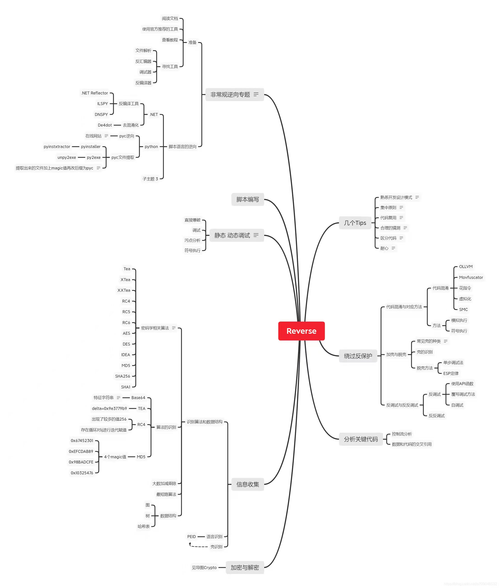
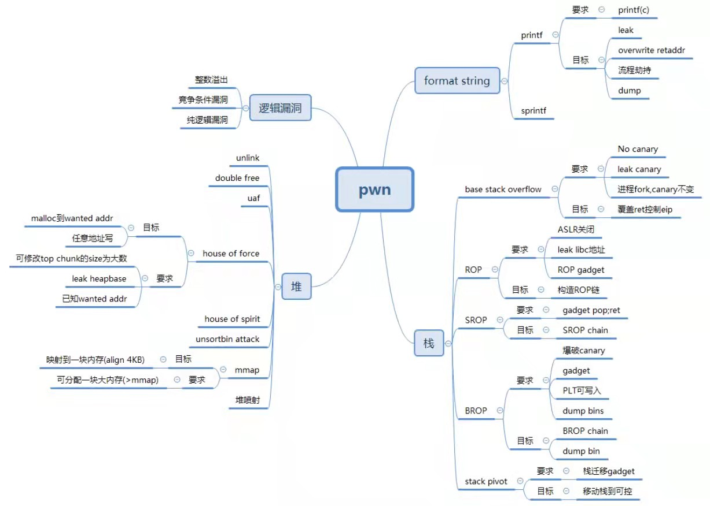
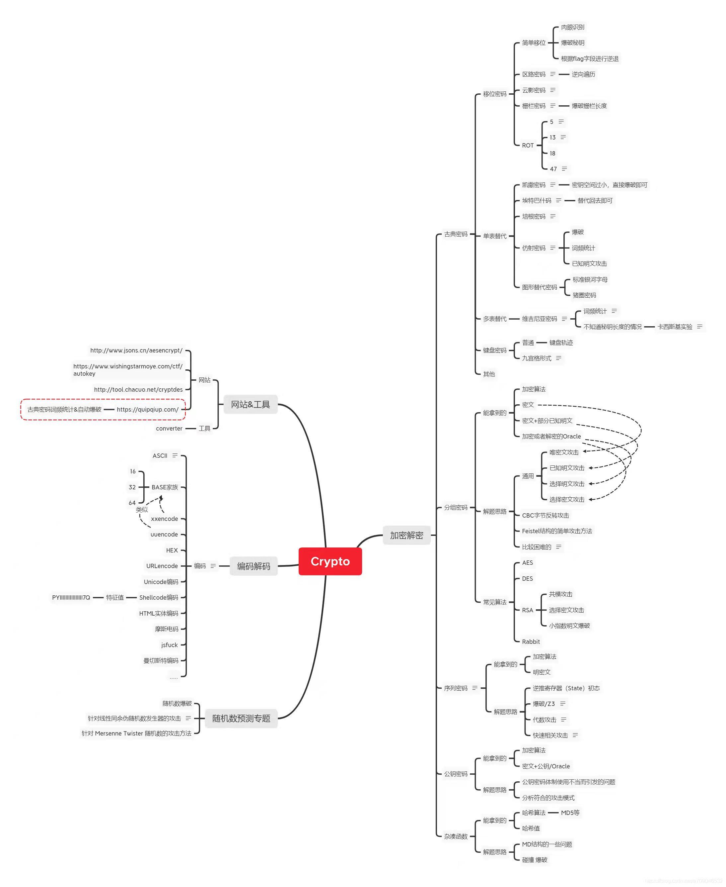
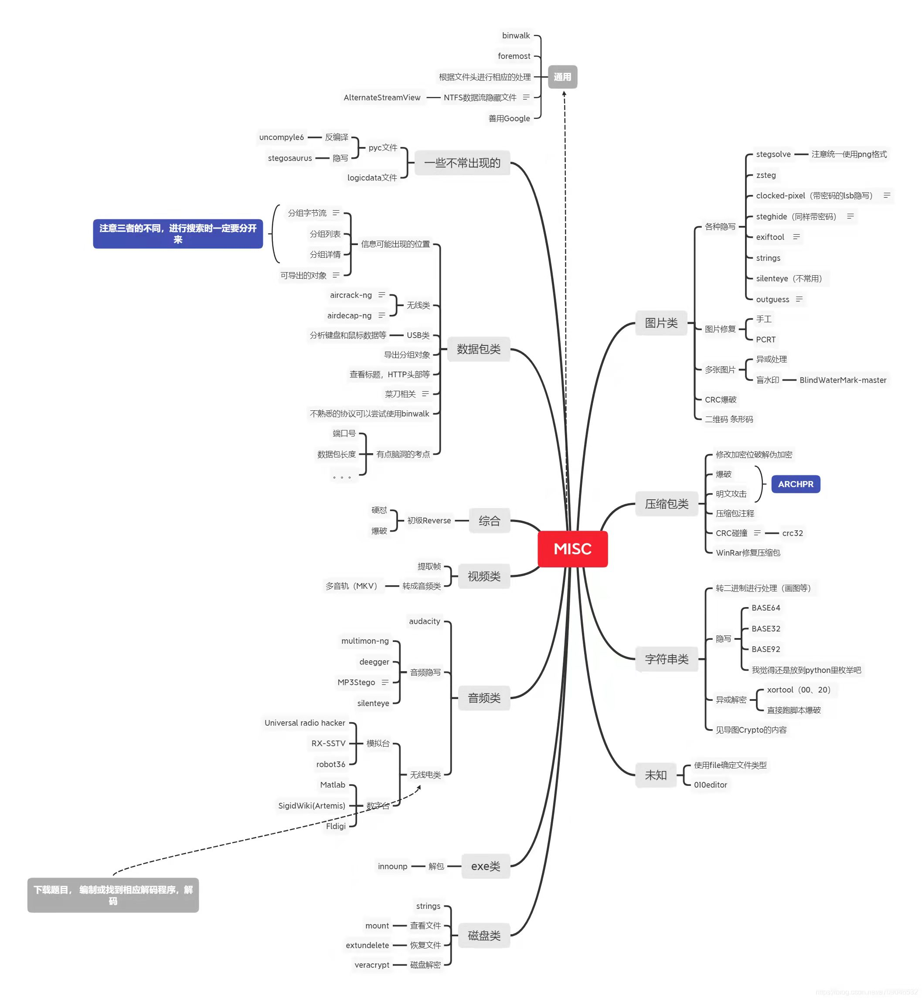
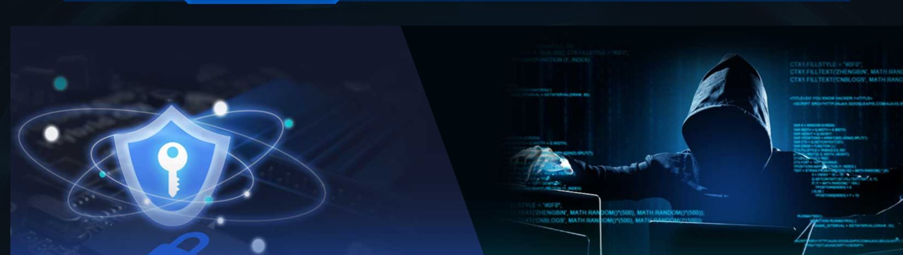
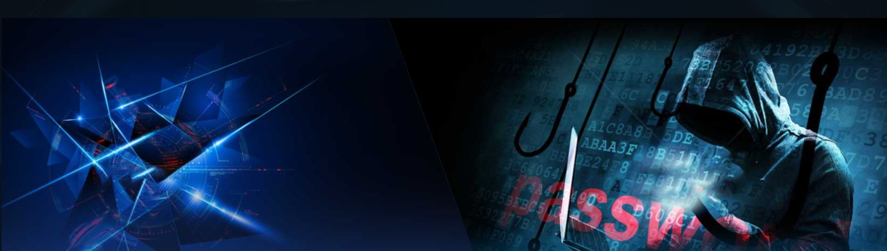

网络安全 CTF
1.1 CTF 简介
概述
CTF（Capture The Flag）中文一般译作夺旗赛，在网络安全领域中指的是网络安全技术人员之间进行技术竞技的一种比赛形式。CTF起源于1996年DEFCON全球黑客大会，以代替之前黑客们通过互相发起真实攻击进行技术比拼的方式。发展至今，已经成为全球范围网络安全圈流行的竞赛形式，2013年全球举办了超过五十场国际性CTF赛事。而DEFCON作为CTF赛制的发源地，DEFCON CTF也成为了目前全球最高技术水平和影响力的CTF竞赛，类似于CTF赛场中的“世界杯”。
CTF 为团队赛，通常以三人为限，要想在比赛中取得胜利，就要求团队中每个人在各种类别的题目中至少精通一类，三人优势互补，取得团队的胜利。同时，准备和参与 CTF 比赛是一种有效将计算机科学的离散面、聚焦于计算机安全领域的方法。
赛事介绍
CTF是一种流行的信息安全竞赛形式，其英文名可直译为“夺得Flag”，也可意译为“夺旗赛”。其大致流程是，参赛团队之间通过进行攻防对抗、程序分析等形式，率先从主办方给出的比赛环境中得到一串具有一定格式的字符串或其他内容，并将其提交给主办方，从而夺得分数。为了方便称呼，我们把这样的内容称之为“Flag”。
CTF竞赛模式具体分为以下三类：
- 解题模式（Jeopardy）
- 在解题模式CTF赛制中，参赛队伍可以通过互联网或者现场网络参与，这种模式的CTF竞赛与ACM编程竞赛、信息学奥赛比较类似，以解决网络安全技术挑战题目的分值和时间来排名，通常用于在线选拔赛。题目主要包含逆向、漏洞挖掘与利用、Web渗透、密码、取证、隐写、安全编程等类别。
- 攻防模式（Attack-Defense）
- 在攻防模式CTF赛制中，参赛队伍在网络空间互相进行攻击和防守，挖掘网络服务漏洞并攻击对手服务来得分，修补自身服务漏洞进行防御来避免丢分。攻防模式CTF赛制可以实时通过得分反映出比赛情况，最终也以得分直接分出胜负，是一种竞争激烈，具有很强观赏性和高度透明性的网络安全赛制。在这种赛制中，不仅仅是比参赛队员的智力和技术，也比体力（因为比赛一般都会持续48小时及以上），同时也比团队之间的分工配合与合作。
- 混合模式（Mix）
- 结合了解题模式与攻防模式的CTF赛制，比如参赛队伍通过解题可以获取一些初始分数，然后通过攻防对抗进行得分增减的零和游戏，最终以得分高低分出胜负。采用混合模式CTF赛制的典型代表如iCTF国际CTF竞赛。
题目类别
- Reverse
提示：点击上方图片放大查看
- 题目涉及到软件逆向、破解技术等，要求有较强的反汇编、反编译功底。主要考查参赛选手的逆向分析能力。
- 所需知识：汇编语言、加密与解密、常见反编译工具
- Pwn
提示：点击上方图片放大查看
- Pwn 在黑客俚语中代表着攻破，获取权限，在 CTF 比赛中它代表着溢出类的题目，其中常见类型溢出漏洞有整数溢出、栈溢出、堆溢出等。主要考查参赛选手对漏洞的利用能力。
- 所需知识：C，OD+IDA，数据结构，操作系统
- Web
- Web 是 CTF 的主要题型，题目涉及到许多常见的 Web 漏洞，如 XSS、文件包含、代码执行、上传漏洞、SQL 注入等。也有一些简单的关于网络基础知识的考察，如返回包、TCP/IP、数据包内容和构造。可以说题目环境比较接近真实环境。
- 所需知识：PHP、Python、TCP/IP、SQL
点击学习SQL注入
点击学习文件上传
点击了解Burpsuit使用
- Crypto
提示：点击上方图片放大查看
- 题目考察各种加解密技术，包括古典加密技术、现代加密技术甚至出题者自创加密技术，以及一些常见编码解码，主要考查参赛选手密码学相关知识点。通常也会和其他题目相结合。
- 所需知识：矩阵、数论、密码学
点击获取解码工具
- Misc
提示：点击上方图片放大查看
- Misc 即安全杂项，题目涉及隐写术、流量分析、电子取证、人肉搜索、数据分析、大数据统计等，覆盖面比较广，主要考查参赛选手的各种基础综合知识。
- 所需知识：常见隐写术工具、Wireshark 等流量审查工具、编码知识
- Mobile
- 主要分为 Android 和 iOS 两个平台，以 Android 逆向为主，破解 APK 并提交正确答案。
- 所需知识：Java，Android 开发，常见工具
高质量的比赛
详见:ctftime.org
- 练习平台推荐
- 攻防世界
- BUUCTF 
提示：点击上方图片跳转
提示：点击上方图片跳转
- Pwn2Own
- 世界最难的黑客挑战赛
- 针对主流浏览器的远程攻击
- 要求沙箱逃逸
- CyberGrandChallenge
- 机器人的CTF攻防比赛
- 自动化漏洞挖掘、漏洞利用、程序分析、程序补丁
竞赛小贴士
- 寻找团队
- 彼此激励24小时以上的连续作战
- 彼此分享交流技术与心得是最快的成长途径
- 强有力的团队可以让你安心专注于某一领域
- 在黑暗中前行不会感到孤独
- 有效训练
- 坚持不懈地训练是成为强者的必经途径
- wargame
- 经典赛题配合writeup加以总结
- ctfs
- 以赛代练
- 总结与分享
- 坚持不懈地训练是成为强者的必经途径
- wargame推荐
- 漏洞挖掘与利用
- pwnable.kr
- exploit-exercises
- netgarage
- 逆向工程与软件破解
- web渗透
- 综合类
- 漏洞挖掘与利用
线下赛 AWD 模式
Attack With Defence，简而言之就是你既是一个 hacker，又是一个 manager。
比赛形式：一般就是一个 ssh 对应一个服务，可能是 web 也可能是 pwn，然后 flag 五分钟一轮，各队一般都有自己的初始分数，flag 被拿会被拿走 flag 的队伍均分，主办方会对每个队伍的服务进行 check，check 不过就扣分，扣除的分值由服务 check 正常的队伍均分。
怎样拿到 flag
- web 主要是向目标服务器发送 http 请求，返回 flag
- bin 主要是通过 exploit 脚本读取
/home/username下某个文件夹下的 flag 文件
Web 题目类型
- 出题人自己写的 CMS 或者魔改后的 CMS(注意最新漏洞、1day 漏洞等)
- 常见(比如
Wordpress博客啊、Discuz!论坛啊)或者不常见 CMS 等 - 框架型漏洞(CI等)
- 如何在 CTF 中当搅屎棍
- AWD 模式生存技巧
- 能力：
- 漏洞反应能力
- 快速编写脚本
- web代码审计
- 心态放好，因为 web 比较容易抓取流量，所以即使我们被打，我们也可以及时通过分析流量去查看别的队伍的 payload，从而进行反打。
- 脚本准备：一句话，文件包含，不死马、禁止文件上传等
- 警惕 web 弱口令，用最快的速度去补。
Bin 题目类型
大部分是 PWN，题目类型包括栈、堆、格式化字符串等等。
- 能力：
- 迅速找到二进制文件的漏洞，迅速打 patch 的能力
- 全场打 pwn 的 exp 脚本编写
- 熟悉服务器运维
- 尽快摸清楚比赛的 check 机制
- 如果二进制分析遇到障碍难以进行，那就去帮帮 web 选手运维
- 看看现场环境是否可以提权，这样可以方便我们搞操作（如魔改 libc 等等）
技巧
- 如果自己拿到 FB， 先用 NPC 服务器或者自己服务器测试，格外小心自己的 payload 不要被别的队伍抓取到, 写打全场的 exp 时，一定要加入混淆流量。
- 提前准备好 PHP 一句话木马等等脚本。
- 小心其他队伍恶意攻击使我们队伍机器的服务不能正常运行，因此一定要备份服务器的配置。
- 尽可能在不搞崩服务和绕过 check 的情况下，上 WAF，注意分析别人打过来的流量，如果没有混淆，可以大大加快我们的漏洞分析速度。
- 工具准备: 中国菜刀、 Nmap、Xshell、 合适的扫描器等。
- 心态不要崩。
- 不要忽视 Github 等平台，可能会有写好的 exp 可以用。
- 将 flag 的提交自动化。
搭建 CTF 比赛平台
- FBCTF - The Facebook CTF is a platform to host Jeopardy and “King of the Hill” style Capture the Flag competitions.
- CTFd - CTFd is a Capture The Flag in a can. It's easy to customize with plugins and themes and has everything you need to run a jeopardy style CTF.
- SecGen - SecGen creates vulnerable virtual machines so students can learn security penetration testing techniques.
参考